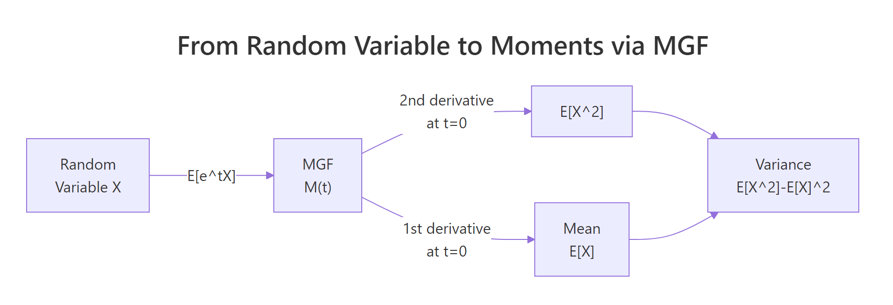
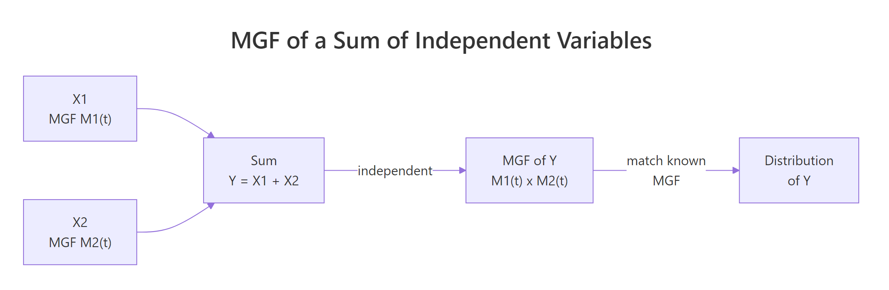

Moment Generating Functions in R: Theory, Computation & Applications
The moment generating function (MGF) of a random variable $X$ is $M_X(t) = E[e^{tX}]$. When it exists in a neighbourhood of $t=0$, every moment of $X$, mean, variance, skewness, kurtosis, can be read off by differentiating $M_X(t)$ at $t=0$. MGFs also turn convolutions of independent random variables into plain products, and their uniqueness property lets you identify a distribution from its MGF alone.
What is a moment generating function in R?
The MGF is a transform: it repackages everything a random variable knows about itself into a single function of a dummy variable $t$. The payoff is that routine questions like "what is $E[X]$?" or "what is $Var(X)$?" become derivative evaluations, no integrals required once you have the MGF. Let's compute the MGF of an Exponential($\lambda = 2$) random variable at a few values of $t$ and check it matches the closed form $\lambda / (\lambda - t)$.
Three things to notice. First, $M_X(0) = 1$, this is always true for any MGF, since $E[e^0] = E[1] = 1$. It's a useful sanity check. Second, the function grows fast as $t$ approaches $\lambda = 2$ (the boundary); at $t = 2$ it blows up. Third, we can only evaluate the MGF for $t < \lambda$, outside that window the expectation diverges. Every MGF has such a region of convergence around zero.
That's the formula, but does it match reality? Let's draw samples from the distribution and approximate $E[e^{tX}]$ by the sample average.
The Monte Carlo estimates track the theoretical values to three decimal places, exactly what the law of large numbers predicts. This is the reassurance we need before trusting MGF-based derivations later in the post: the formula $M_X(t) = E[e^{tX}]$ is not an abstract identity, it's a real expectation that you can sample against.

Figure 1: How an MGF converts a random variable into its moments via derivatives at zero.
Try it: Write a function ex_mgf_exp3(t) for the MGF of Exponential(rate = 3). Evaluate it at t = 1, then confirm by Monte Carlo using 1e5 samples.
Click to reveal solution
Explanation: Plug $\lambda = 3$ into $\lambda/(\lambda - t)$. The Monte Carlo average of $e^{tX}$ over 100,000 samples lands within 0.2% of the theoretical 1.5.
How do you extract moments from an MGF?
This is the "generating" part of "moment generating function". The $k$-th moment of $X$, that is, $E[X^k]$, equals the $k$-th derivative of $M_X(t)$ evaluated at $t=0$:
$$E[X^k] = \left.\frac{d^k}{dt^k} M_X(t)\right|_{t=0}$$
The intuition comes from Taylor expanding $e^{tX}$:
$$M_X(t) = E\left[1 + tX + \frac{t^2 X^2}{2!} + \cdots\right] = 1 + t\, E[X] + \frac{t^2}{2!} E[X^2] + \cdots$$
Differentiating $k$ times and setting $t=0$ pops out $E[X^k]$ and kills every other term. In R, we don't even have to do the calculus by hand, base R's D() function performs symbolic differentiation on expressions.
The numbers line up with the textbook formulas for Exp($\lambda$): mean is $1/\lambda = 0.5$, variance is $1/\lambda^2 = 0.25$. We never wrote an integral. The D() call did the symbolic work; eval() just plugged $t = 0$ into the resulting expressions. For any MGF you can write as a single R expression(), this two-line recipe recovers every moment.
D() returns an exact symbolic derivative, so there's no truncation bias to tune.Try it: Use D() to compute the second moment $E[X^2]$ and variance of an Exponential(rate = 3) random variable. Compare your variance to the formula $1/\lambda^2$.
Click to reveal solution
Explanation: Mean is $1/3 \approx 0.333$; variance is $1/9 \approx 0.111$. Both match the closed-form Exp($\lambda$) identities.
What are the MGFs of common distributions?
Most named distributions have simple closed-form MGFs. The table below is the single most useful piece of reference material in this post, bookmark it.
| Distribution | MGF $M_X(t)$ | Domain of $t$ | Mean | Variance |
|---|---|---|---|---|
| Bernoulli($p$) | $(1-p) + p e^t$ | all $t$ | $p$ | $p(1-p)$ |
| Binomial($n, p$) | $[(1-p) + p e^t]^n$ | all $t$ | $np$ | $np(1-p)$ |
| Poisson($\lambda$) | $\exp(\lambda(e^t - 1))$ | all $t$ | $\lambda$ | $\lambda$ |
| Exponential($\lambda$) | $\lambda / (\lambda - t)$ | $t < \lambda$ | $1/\lambda$ | $1/\lambda^2$ |
| Normal($\mu, \sigma^2$) | $\exp(\mu t + \sigma^2 t^2 / 2)$ | all $t$ | $\mu$ | $\sigma^2$ |
| Gamma($k, \lambda$) | $(\lambda / (\lambda - t))^k$ | $t < \lambda$ | $k/\lambda$ | $k/\lambda^2$ |
Seeing the formulas side-by-side tells you something deep: the Gamma MGF is the Exponential MGF to a power, hinting that a Gamma($k, \lambda$) is a sum of $k$ independent Exp($\lambda$) variables, we'll prove exactly that in the capstone exercises. Let's encode the six MGFs in R and plot them.
All six MGFs pass through $(0, 1)$, as they must. Near $t = 0$ they all curve gently upward, the slope at zero is the mean of the distribution, and the curvature is related to the variance. The Binomial(10, 0.3) climbs fastest because it has the largest mean among the six (mean = 3), while Bernoulli(0.3), with mean 0.3, barely rises.
Try it: Write ex_mgf_pois(t, lambda) from scratch and evaluate it at t = 0.5 for both lambda = 2 and lambda = 5. Which Poisson has the larger MGF at t = 0.5, and why?
Click to reveal solution
Explanation: At $t = 0.5$, $e^{0.5} - 1 \approx 0.649$. The MGF is $\exp(\lambda \times 0.649)$, so it grows exponentially in $\lambda$. A five-fold bigger $\lambda$ gives about $e^{3 \times 0.649} \approx 7\times$ bigger MGF.
Why do MGFs uniquely identify distributions?
The uniqueness theorem says: if $M_X(t)$ and $M_Y(t)$ exist and agree on any open interval around $t = 0$, then $X$ and $Y$ have the same distribution. This is striking because two distributions can share a mean and variance yet disagree on everything else, but they cannot share an MGF unless they are truly the same.
Let's see this visually. Exp(2) has mean 0.5 and variance 0.25. A Normal($\mu = 0.5$, $\sigma^2 = 0.25$) also has mean 0.5 and variance 0.25. Identical first two moments, so a moment-matching check would declare them equivalent. Their MGFs, however, diverge sharply.
The two curves are tangent at $t = 0$ (both have value 1 and slope 0.5) and they have the same curvature there (both equal to the variance, 0.25 plus a first-derivative-squared term). But as $t$ moves away from zero, the Exp(2) MGF races toward infinity at $t = 2$ while the Normal's MGF grows like a Gaussian bell turned inside-out. Their third, fourth, and higher derivatives at zero, the higher moments, disagree. That's what the uniqueness theorem is really saying: the full shape of $M_X$ near zero encodes all moments, and all moments together pin down the distribution.
Try it: Plot the MGF of Poisson(1) versus the MGF of a Normal with mean 1 and variance 1 on t in $[-1, 1]$. They share mean and variance, do their MGFs agree?
Click to reveal solution
Explanation: The curves touch at $(0, 1)$ and roughly agree for small $|t|$, but diverge as $|t|$ grows. Poisson's MGF has a double-exponential shape $\exp(\lambda(e^t - 1))$, while the Normal's is a plain Gaussian in the exponent.
How do MGFs make sums of independent random variables easy?
Here is the property that makes MGFs genuinely practical. If $X$ and $Y$ are independent, then the MGF of their sum is the product of their MGFs:
$$M_{X+Y}(t) = M_X(t) \cdot M_Y(t)$$
In one line this turns a convolution integral, the direct way to compute the distribution of $X+Y$, into plain multiplication. When the product matches a known MGF, uniqueness tells us the sum is that distribution.

Figure 2: For independent variables, the MGF of a sum equals the product of MGFs, convolutions become multiplications.
The textbook application: a Binomial($n, p$) is a sum of $n$ independent Bernoulli($p$) variables. So its MGF should be the Bernoulli MGF raised to the $n$-th power. Let's check numerically.
Identical to machine precision, as expected, $[(1-p) + p e^t]^{10}$ is literally $[mgf\_bern(t,p)]^{10}$. This is how Binomial-as-sum-of-Bernoullis is proved in textbooks. Let's stretch the idea further: the sum of two independent Poissons should itself be Poisson, with rate equal to the sum of the rates.
Agreement to three significant figures, and the match would tighten as n grows. The product of two Poisson MGFs $\exp(\lambda_1(e^t-1)) \cdot \exp(\lambda_2(e^t-1)) = \exp((\lambda_1+\lambda_2)(e^t-1))$ is the MGF of Poisson($\lambda_1 + \lambda_2$). By uniqueness, the sum is Poisson($\lambda_1 + \lambda_2$). No convolution sum required.
Try it: Using MGFs alone, identify the distribution of $X + Y$ where $X \sim \text{Normal}(\mu_1, \sigma_1^2)$ and $Y \sim \text{Normal}(\mu_2, \sigma_2^2)$ are independent. Write out the MGF product.
Click to reveal solution
$$M_{X+Y}(t) = M_X(t) \cdot M_Y(t) = \exp(\mu_1 t + \sigma_1^2 t^2 / 2) \cdot \exp(\mu_2 t + \sigma_2^2 t^2 / 2)$$
$$= \exp\left((\mu_1 + \mu_2) t + (\sigma_1^2 + \sigma_2^2) t^2 / 2\right)$$
This is the MGF of a Normal with mean $\mu_1 + \mu_2$ and variance $\sigma_1^2 + \sigma_2^2$. By uniqueness, $X + Y \sim \text{Normal}(\mu_1 + \mu_2, \sigma_1^2 + \sigma_2^2)$. Numerical check:
Empirical mean ≈ 4, variance ≈ 5, matching Normal(4, 5).
When does the MGF fail to exist?
An MGF requires $E[e^{tX}]$ to be finite for $t$ in an open interval around zero. Heavy-tailed distributions don't cooperate. The Cauchy distribution, the canonical example, has no MGF at any $t \neq 0$ because the integral $\int e^{tx} \frac{1}{\pi (1 + x^2)} dx$ diverges.
Let's see the non-existence empirically. If the MGF doesn't exist, the sample-average approximation should be unstable: it will not converge as n grows, and different sample sizes give wildly different values.
The exact numbers will differ between runs, that's the whole point. Because extreme Cauchy draws (arbitrarily far out in the tails) dominate the sum $\sum \exp(t x_i)$, the sample average is effectively driven by one or two huge outliers. The "estimate" never settles to a finite limit. Contrast this with the Exponential MGF earlier, where 100,000 samples gave agreement to three decimals.
Try it: Run the Cauchy Monte Carlo MGF estimate twice with different seeds and n = 500. Do you get similar values?
Click to reveal solution
Explanation: The two runs disagree by orders of magnitude. A single Cauchy draw of, say, 250 contributes $e^{0.1 \times 250} \approx 7 \times 10^{10}$ to the average, one extreme sample dominates the whole estimate. This instability is empirical proof that the MGF doesn't exist.
Practice Exercises
Exercise 1: Identify a distribution from its MGF
You're told that $M_X(t) = (1 - 2t)^{-3}$ for $t < 1/2$. Identify the distribution of $X$, then compute its mean and variance in R using D().
Click to reveal solution
The MGF $(1 - 2t)^{-3}$ can be rewritten as $\left(\frac{1/2}{1/2 - t}\right)^3$, which matches the Gamma($k, \lambda$) MGF $(\lambda/(\lambda - t))^k$ with $k = 3$, $\lambda = 1/2$. So $X \sim \text{Gamma}(3, 1/2)$, with mean $k/\lambda = 6$ and variance $k/\lambda^2 = 12$.
Explanation: The mean pops straight out of the first derivative, and subtracting the squared mean from the second moment gives the variance. Both agree with the Gamma(3, 1/2) closed forms.
Exercise 2: Empirical MGF of Gamma vs theoretical
Simulate 10,000 draws from Gamma(shape = 4, rate = 2). Compute the empirical MGF on the grid seq(-0.5, 1, length.out = 50). Overlay it with the theoretical Gamma MGF. How well do they match?
Click to reveal solution
Explanation: Curves overlap closely for $t < 1.5$, then the empirical estimate becomes noisy near the domain boundary $t = 2$ because very few samples have extreme enough values to approximate the blow-up. Typical, empirical MGFs are most reliable well inside the convergence region.
Exercise 3: Sum of k Exponentials is Gamma (via MGFs)
Using MGFs, show that the sum of $k$ independent Exp($\lambda$) random variables has a Gamma($k, \lambda$) distribution. Verify numerically with $k = 5$, $\lambda = 2$.
Click to reveal solution
By the product rule, if $X_1, \dots, X_k$ are iid Exp($\lambda$),
$$M_{X_1 + \cdots + X_k}(t) = \prod_{i=1}^{k} M_{X_i}(t) = \left(\frac{\lambda}{\lambda - t}\right)^k$$
This is the MGF of Gamma($k, \lambda$). By uniqueness, the sum is Gamma($k, \lambda$).
Explanation: The sample mean and variance match the Gamma(5, 2) formulas $k/\lambda = 2.5$ and $k/\lambda^2 = 1.25$ to three decimals.
Complete Example
A small insurance book writes 5 independent claims per year, with each claim size following Exp(rate = 0.01), that is, mean \$100 per claim. What is the distribution of the total annual payout, and how do we summarise it?
Using the result from Exercise 3, the sum of 5 iid Exp(0.01) variables is Gamma(5, 0.01). We can derive the mean and variance directly from the MGF using D(), then sanity-check by simulation.
The MGF derivation gives expected annual payout of \$500 with variance 50,000 (standard deviation ≈ \$224). Simulation agrees. An actuary would use the Gamma distribution's quantile function qgamma(0.99, shape=5, rate=0.01) to size reserves, the entire pricing workflow flows from recognizing the payout as Gamma via an MGF product.
Summary
Here's what MGFs buy you, at a glance.
| Task | MGF approach | Why it's better |
|---|---|---|
| Compute $E[X^k]$ | Take $k$-th derivative of $M_X(t)$ at $t=0$ | Avoids evaluating an integral for every moment |
| Identify distribution | Match MGF against a table | Two distributions with the same MGF are equal |
| Distribution of $X + Y$ (independent) | Multiply $M_X(t) \cdot M_Y(t)$ | Replaces convolution with multiplication |
| Check if $X$ has heavy tails | MGF existence test | MGF doesn't exist ⇔ some exponential moment is infinite |
Key takeaways:
- $M_X(t) = E[e^{tX}]$, always equal to 1 at $t=0$, defined on an open interval around 0 (when it exists).
- In R, write the MGF as an
expression()and use base RD()to get moments exactly, no calculus by hand. - For independent sums, MGFs multiply. This is the shortcut behind "Binomial is sum of Bernoullis" and "Sum of Poissons is Poisson".
- Uniqueness: identical MGFs ⇒ identical distributions. Matching just the mean and variance is not enough.
- Heavy-tailed distributions (Cauchy, some Paretos) have no MGF. Fall back to the characteristic function.
References
- Casella, G. & Berger, R. L., Statistical Inference, 2nd Edition. Duxbury (2002). Chapter 2: Transformations and Expectations.
- Wikipedia, Moment-generating function. Link
- StatLect, Moment generating function: Definition, properties, examples. Link
- Pishro-Nik, H., Introduction to Probability, Statistics, and Random Processes, Ch. 6.1.3. ProbabilityCourse. Link
- Stanford CS109, MGF Lecture Notes. Link
- Wolfram MathWorld, Moment-Generating Function. Link
- R Core Team,
?D, Thestatspackage reference on symbolic differentiation. Link
Continue Learning
- Expected Value and Variance in R, The parent tutorial; derives mean and variance directly by integration, setting up the MGF shortcut used here.
- Normal, t, F and Chi-Squared Distributions in R, Home of the Normal MGF and its derivatives, plus the chi-square that shows up in sums of squared Normals.
- Central Limit Theorem in R, MGFs give a clean proof sketch of why sample means converge to Normal as $n \to \infty$.